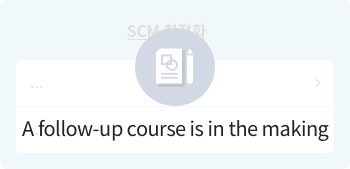

Management College
How Should I Change My Work for Deep Change?
How Can I Improve Myself?
How Can I Improve Myself?
Management College conducts business to achieve Deep Change. It offers professional
lessons in 6 function groups and one competency area to reinforce the learners’ initiative.
Currently, the plan is the allowance of combining different functions (instead of just
knowledge and expertise of each function group) to ensure mixed and integrated skill sets.
lessons in 6 function groups and one competency area to reinforce the learners’ initiative.
Currently, the plan is the allowance of combining different functions (instead of just
knowledge and expertise of each function group) to ensure mixed and integrated skill sets.
SCM/Operation
- By dealing with the “supply chain management” that makes the management activities efficient, which are necessary to providing exceptional service and goods to our customers at an affordable price and at the right time, this content enables SK members to take more initiative in Deep Change in their respective works.
Click each badge and course to go to the corresponding page.


Methodology
/Applied Learning
Purchasing Advanced
- Strategic Purchase for Corporate Success
- - Understanding Corporate Strategy and Corporate Competitiveness
- - Corporate Strategy and Consistent Purchasing Strategy
- - Success of Corporations and the Role of Purchasing
- Strategic Supplier Management
- - Two Ways to Deal with the Supplier - Cooperation and Competition
- - Nurturing and Benefit Sharing with the Suppliers
- - Understanding SRM and the Purchasing Chessboard
- Cooperation and Connection with Purchasing and other Departments
- - Associating Development and Purchasing - Development Purchase
- - Purchasing and its Connection with other Departments

Understanding
Concepts
Purchasing Essentials
- Am I a True Buyer, The Fundamentals of Purchasing
- - Understanding Purchasing
- - Understanding the 5R in Purchasing
- - Core of Purchasing
- - Developing and Changing Purchase Management
- Understanding the Purchasing Contracts and other Laws You Must Know
- - Moral Obligations in Purchasing
- - Understanding Purchasing Contract
- - Subcontracting Law and the Law on Win-Win Partnership
- - Must Knows in Subcontract Fee
- - Ban on Requesting to Share Data on Technology, What to Look Out For
- What am I Purchasing? Understanding and Managing Purchasing Goods
- - Classification and Management of Purchasing Goods
- - Material Management Strategy Following the Item Classification
- - Understanding Service / Service Goods
- Never Let Your Guard Down, Risk Management in Purchasing
- - Intro: Risk Management of Tylenol
- - Purchasing Risk Management and Procurement Sustainability Plan
- - Risk Managing the Fluctuating Price of Purchasing Materials
- - The Age of Pandemic and Purchase Risk Management
- Digital Purchasing Innovation
- - Core Understanding of Digital Innovation
- - Innovative Measures on Digital Marketing
- Understanding and Using Purchasing Work Process
- - Understanding and Applying the Purchasing Work Process
- - Searching and Evaluating the Supplier
- - Guide to Writing the RFP and RFQ and Things to Avoid
- - Managing and Evaluating Bidding Process
- - Selecting and Contracting the Supplier
- - Understanding PO Placement
- - Procurement Activity after Contract
- Know More Earn More, Finance, Accounting, and Distribution for Buyers
- - Managing Account Registration
- - Understanding and Applying Incoterms 2020
- - Supplier Credibility and Financial Analysis
- - Practical Lessons on Trade Insurance/ Import Insurance
- - Import Clearance, Duty and Surtax
- Purchasing Cost Management
- - Strategic Meaning of Purchasing Cost
- - Price Analysis and Price Adequacy Evaluation
- - Meaning and Method of Cost Analysis
- - Understanding Total Cost of Ownership (TCO)
- - Applying Total Cost of Ownership (TCO)
- - Target Cost and Value Analysis
- Social Value and Purchase of Corporation
- - Purchasing and ESG/SV Practice (1)
- - Purchasing and ESG/SV Practice (2)
